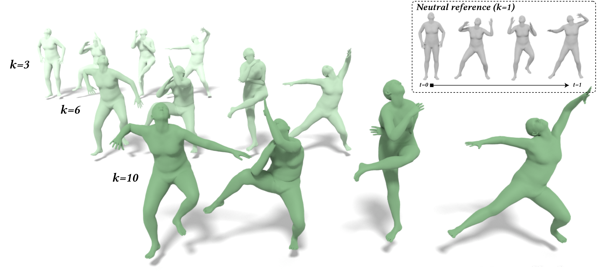
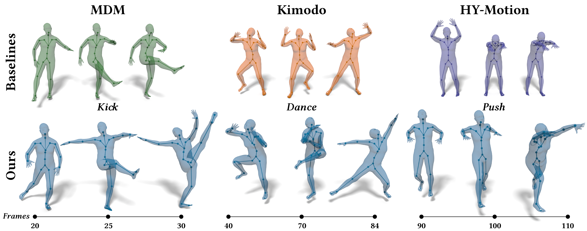
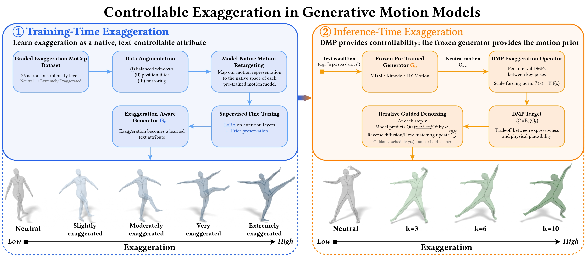
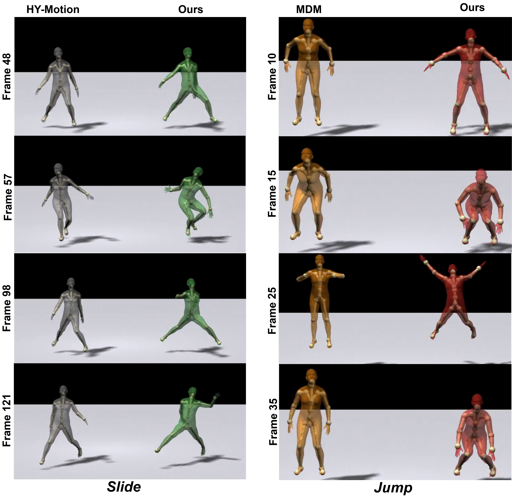
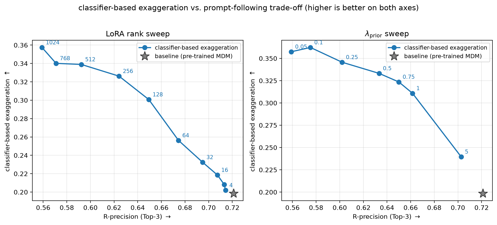
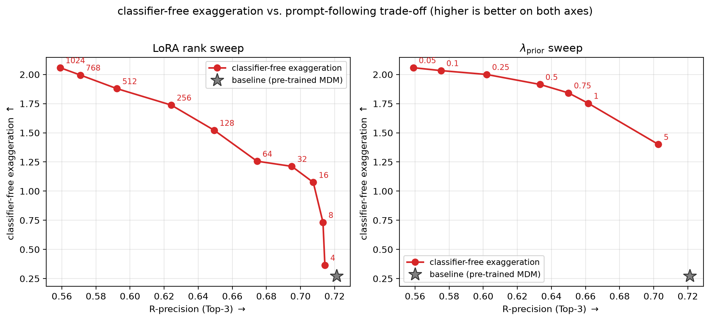
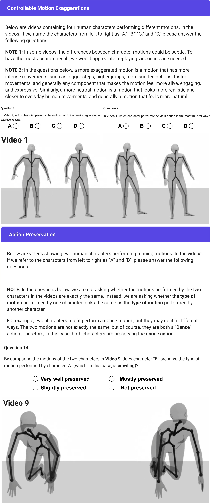

Controllable Exaggeration for Generative Motion Models via Training-Time Adaptation and Inference-Time Guidance

Our approach produces controllable and plausible motion exaggerations from a neutral reference. Increasing the exaggeration scale progressively amplifies the motion while preserving its underlying action intent. We introduce complementary training-time and inference-time strategies that transfer across diffusion and flow-matching motion generators.
Video Presentation
Abstract
Recent motion generative models synthesize physically plausible character motion, but often overlook the animation principles that professionals use to make characters feel alive, expressive, and engaging. We focus on exaggeration and study how to incorporate it into modern text-to-motion pipelines. We introduce a two-stage framework. At training time, we fine-tune pre-trained motion models on a curated, graded exaggeration dataset. At inference time, we formulate exaggeration with dynamic movement primitives (DMPs) and use that formulation to guide diffusion and flow-matching models without additional training. Across MDM, KIMODO, and HY-Motion, our methods increase expressiveness while preserving the neutral motion's intent and physical plausibility.
What do we aim to solve?
Motion foundation models have made major progress in generating realistic human motion from text. Yet realism alone is not enough for compelling character animation. Professional animators intentionally amplify poses, timing, and trajectories to clarify an action and make it more expressive. Existing generative models do not provide a reliable way to control this exaggeration while keeping the original action recognizable and the resulting motion physically believable.

We therefore ask: Can a generative motion model amplify expression in a controllable manner while preserving action intent and physical plausibility? Our work addresses this question with two complementary routes: learning exaggeration as a text-controlled attribute during fine-tuning, and introducing exaggeration at inference time while keeping the base motion model frozen.
Problem Statement and Preliminaries
Given a neutral motion generated from a text prompt, our objective is to produce a family of motions with increasing expressive intensity. A successful method should satisfy three properties: the exaggeration level should be controllable, the semantic identity of the action should remain unchanged, and the resulting sequence should remain physically plausible.

Dynamic movement primitives provide a useful representation for inference-time control. A DMP decomposes movement into an attractor dynamics term and a learned forcing term that describes the characteristic shape of the trajectory. Scaling the forcing term amplifies that trajectory while preserving the interval boundaries. We use the resulting exaggerated motion as a target that guides the sampling process of a pre-trained generative model.
Methodology
Training-Time Adaptation
We introduce ExMoCap, a curated motion-capture dataset containing 26 actions performed at five intensity levels, from neutral to extremely exaggerated. We retarget and augment these performances for each model's motion representation, then fine-tune pre-trained generators using LoRA and prior preservation. Text prompts describe the requested exaggeration level, allowing the adapted model to treat expressive intensity as a native, controllable attribute.

The training objective balances exaggeration control with preservation of the pre-trained model's broad motion prior. Prior preservation discourages the adapted model from drifting away from plausible human motion or losing alignment with the input prompt.
Inference-Time Guidance
Our training-free approach first generates a neutral reference motion. The sequence is divided into intervals between key poses, and a DMP is fitted to each interval. Scaling the DMP forcing term produces an exaggerated target whose intensity is controlled continuously by a scalar parameter. During diffusion or flow-matching sampling, gradient-based guidance pulls the generated sequence toward this target while the frozen generative prior regularizes the result.

This formulation requires no additional model training and applies to both diffusion and flow-matching backbones. The guidance strength and exaggeration scale expose a practical trade-off between stronger motion amplification and closer preservation of the neutral action.
Comparative Results
We evaluate controllability, physical amplification, action preservation, and perceptual quality across MDM, KIMODO, and HY-Motion. The experiments compare supervised fine-tuning, training-free DMP guidance, and their combination with the corresponding pre-trained baselines.
Qualitative Comparison Across Backbones

Across diffusion and flow-matching models, our framework increases pose amplitude and characteristic movement while retaining the action and its temporal progression. The examples illustrate that the same control strategy transfers across different model families and motion representations.
Supervised and Training-Free Exaggeration

Supervised fine-tuning provides the strongest direct control over requested exaggeration levels. Training-free guidance offers continuous control without updating the model and restores plausibility compared with unconstrained DMP amplification. Combining both strategies yields the strongest physical exaggeration, with a larger departure from the neutral action.
Controllability and Physical-Intensity Ablations

The classifier-based evaluation measures whether generated motions follow the requested exaggeration progression. Increasing LoRA capacity strengthens exaggeration control, while prior preservation protects prompt adherence and the quality of the learned motion distribution.

Root-relative range of motion quantifies the magnitude of physical amplification. The selected operating points balance stronger exaggeration with text-motion alignment and preservation of the source action.
User Study
We conducted a perceptual study with 20 participants across 320 evaluations. Participants identified the most exaggerated and most neutral motions, then assessed whether exaggerated outputs preserved the source action. The highest requested level was selected as the most exaggerated in 81.8% of comparisons, and 76.7% of the action-preservation ratings were positive overall.

Acknowledgements
This research was supported by Autodesk Research and the Autodesk AI Lab. We are especially thankful for the collaborative environment, technical resources, and insightful discussions that contributed to shaping this work.
If you find this study useful in your work, we kindly ask that you cite it using the following format.
BibTeX
@inproceedings{zamani2027controllable,
title={Controllable Exaggeration for Generative Motion Models via Training-Time Adaptation and Inference-Time Guidance},
author={Zamani, Amirhossein and Rampini, Arianna and Roy, Bruno},
booktitle={arXiv},
year={2027},
url={https://ahhhz975.github.io/ControllableMotionExaggeration/}
}